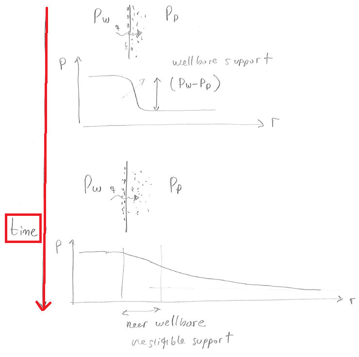

Next: 6.8 Strength anisotropy Up: 6.7 Thermal, chemical, and Previous: 6.7.2 Chemo-electrical effects Contents
So far we have assumed that the radial stress at the wellbore wall is
 .
Such assumption implies a perfect and sharp “mudcake” that creates a sharp gradient between the mud pressure and the pore pressure, such that, viscous forces apply an effective stress
on the wellbore wall (Fig. 6.2).
However, mud water leak off and mud filtration can occur over time decreasing the sharpness of such gradient and reducing the effective stresses in the near wellbore region.
A reduction of effective stress lowers the strength of rock and favors rock failure around the wellbore.
Fig. 6.29 shows an example of a wellbore which is stable right after drilling, but unstable after some time due to mud filtration and loss of radial stress support.
.
Such assumption implies a perfect and sharp “mudcake” that creates a sharp gradient between the mud pressure and the pore pressure, such that, viscous forces apply an effective stress
on the wellbore wall (Fig. 6.2).
However, mud water leak off and mud filtration can occur over time decreasing the sharpness of such gradient and reducing the effective stresses in the near wellbore region.
A reduction of effective stress lowers the strength of rock and favors rock failure around the wellbore.
Fig. 6.29 shows an example of a wellbore which is stable right after drilling, but unstable after some time due to mud filtration and loss of radial stress support.
 |